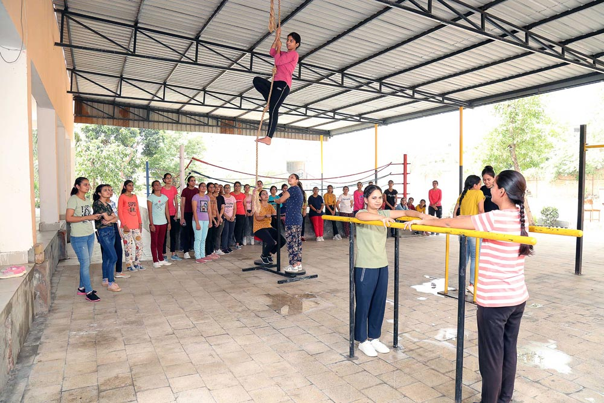
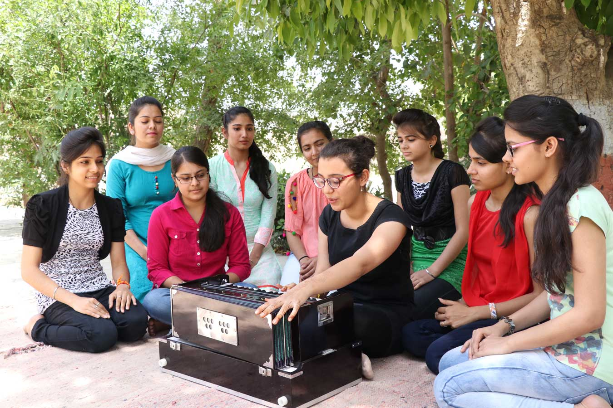

Less repetition
The original site repeats many links and navigation layers. This concept compresses those into fewer, clearer actions.
Campus Life
The live site already contains forms, committees, student reviews, galleries, and amenity references. This version turns those pieces into a campus story that feels welcoming and current.


Facilities & support
Why this works better
The original site repeats many links and navigation layers. This concept compresses those into fewer, clearer actions.
Affiliation, reviews, notices, and forms are surfaced as proof and support, not hidden in deep menus.
The same AVJAIN image set now works with more space, stronger contrast, and cleaner section pacing.
Next step
Instead of navigating multiple categories, students can move directly from overview to action.
Apply on Official SiteSource
This redesign uses the same image library sourced from `avjain.org` and keeps its college profile, history, affiliation, and admissions focus intact.
Visit avjain.org